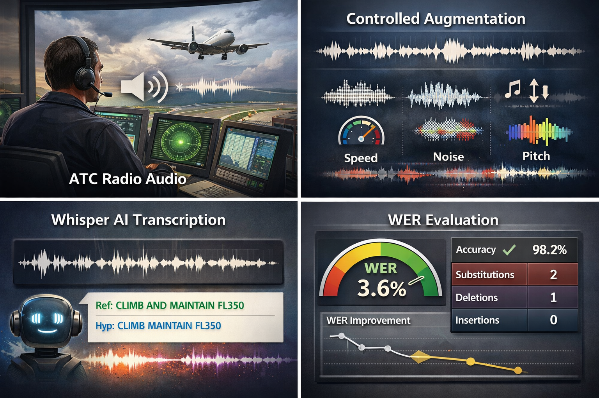
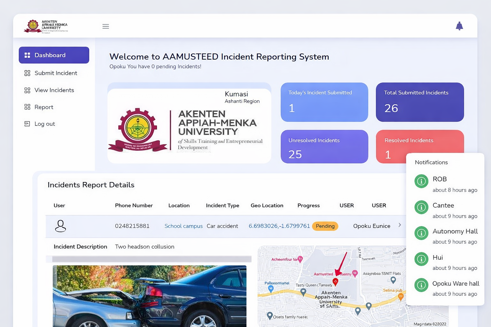
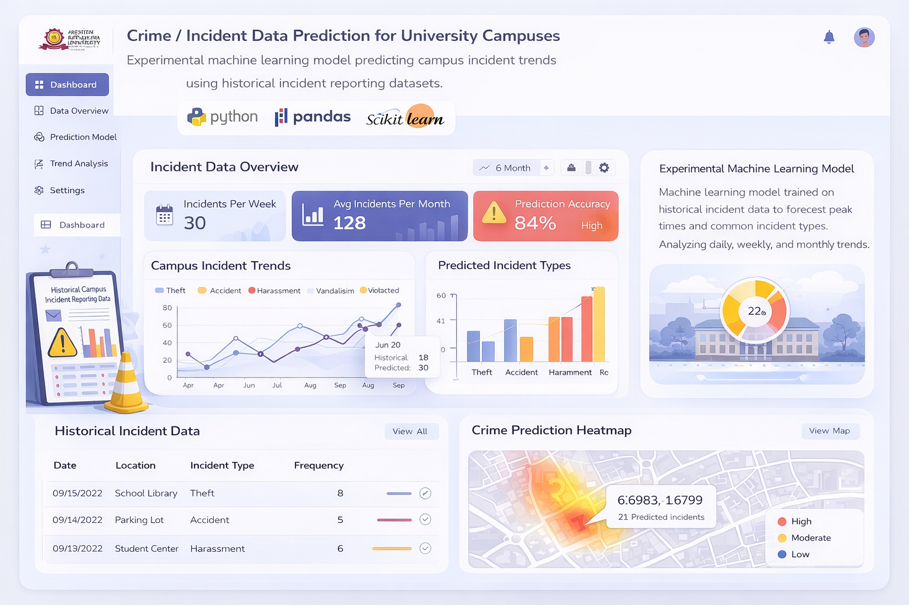

Network Literacy Training — The Trust Hospital (2025)
Staff Training Program
AI • Cybersecurity • Network Systems
Email: abdulganiyu9924@gmail.com / abdul.alatif@thetrusthospital.com | GitHub: Abdulking9 | LinkedIn: abdulganiyuabdullatif | Phone: +233 24 108 9556
Network and Systems Administrator at The Trust Hospital with interests in machine learning, cybersecurity, and intelligent digital systems. My work focuses on secure infrastructure, AI-driven research, and scalable web platforms that support healthcare, education, and community development.
Research project applying deep learning techniques to improve the clarity and transcription accuracy of Air Traffic Control communications.
Tools: Python, PyTorch, Whisper, Hugging Face, Librosa

Designed and implemented a secure web platform enabling students, staff and security officers to report and manage campus incidents digitally.
Tools: PHP, JavaScript, HTML, CSS, MySQL

Experimental machine learning model predicting campus incident trends using historical incident reporting datasets.
Tools: Python, Pandas, Scikit-learn

Email: abdulganiyu9924@gmail.com
Open to research collaboration, graduate assistantships and AI projects.